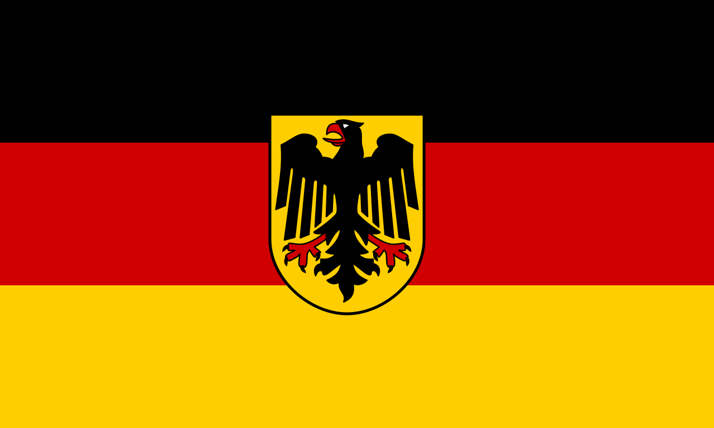
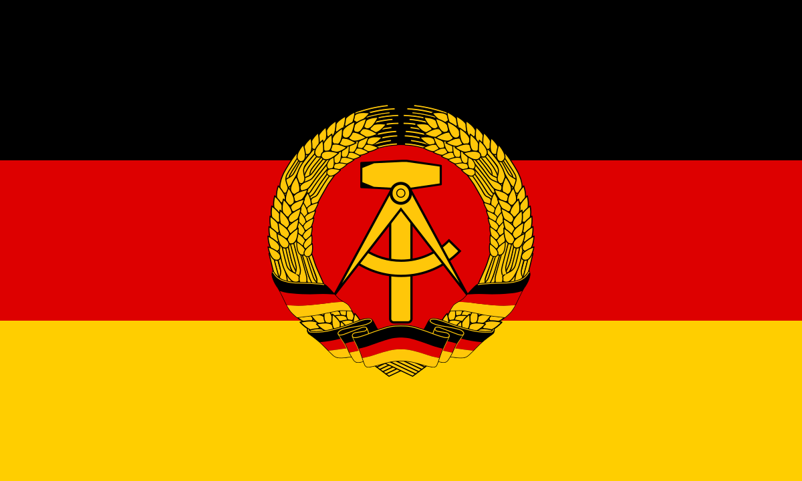

West Germany
West Germany, officially the Federal Republic of Germany[a] (FRG; German: Bundesrepublik Deutschland [ˈbʊndəsʁepuˌbliːk ˈdɔʏtʃlant] (About this soundlisten)), retrospectively designated as the Bonn Republic, is the common English name for the Federal Republic of Germany between its formation on 23 May 1949 and the German reunification through the accession of East Germany on 3 October 1990. During this Cold War period, the western portion of Germany was part of the Western Bloc. West Germany was formed as a political entity during the Allied occupation of Germany after World War II, established from eleven states formed in the three Allied zones of occupation held by the United States, the United Kingdom and France. Its provisional capital was the city of Bonn.
At the onset of the Cold War, Europe was divided between the Western and Eastern blocs. Germany was de facto divided into two countries and two special territories, the Saarland and a divided Berlin. Initially, West Germany claimed an exclusive mandate for all of Germany, identifying as the sole democratically reorganised continuation of the 1871–1945 German Reich. It took the line that the German Democratic Republic (GDR), commonly referred to as East Germany, was an illegally constituted puppet state controlled by the Soviet Union.
Three southwestern states of West Germany merged to form Baden-Württemberg in 1952, and the Saarland joined West Germany in 1957. In addition to the resulting ten states, West Berlin was considered an unofficial de facto eleventh state. While legally not part of West Germany, as Berlin was under the control of the Allied Control Council, West Berlin politically aligned with West Germany and was directly or indirectly represented in its federal institutions.
The foundation for the influential position held by Germany today was laid during the economic miracle of the 1950s (Wirtschaftswunder), when West Germany rose from the enormous destruction wrought by World War II to become the world's third-largest economy. The first chancellor Konrad Adenauer, who remained in office until 1963, worked for a full alignment with NATO rather than neutrality, and secured membership in the military alliance. Adenauer was also a proponent of agreements that developed into the present-day European Union. When the G6 was established in 1975, there was no serious debate as to whether West Germany would become a member.
Following the collapse of communism in Central and Eastern Europe in 1989, symbolised by the opening of the Berlin Wall, both territories took action to achieve German reunification. East Germany voted to dissolve and accede to the Federal Republic of Germany in 1990. Its five post-war states (Länder) were reconstituted, along with the reunited Berlin, which ended its special status and formed an additional Land. They formally joined the federal republic on 3 October 1990, raising the total number of states from ten to sixteen, and ending the division of Germany. The reunited Germany is the direct continuation of the state previously informally called West Germany and not a new state, as the process was essentially a voluntary act of accession: West Germany was enlarged to include the additional states of East Germany, which had ceased to exist. The expanded federal republic retained West Germany's political culture and continued its existing memberships in international organisations, as well as its Western foreign policy alignment and affiliation to Western alliances such as the United Nations, NATO, OECD, and the European Economic Community.
Economic Miracle
The West German Wirtschaftswunder ("economic miracle", coined by The Times) began in 1950. This improvement was sustained by the currency reform of 1948 which replaced the Reichsmark with the Deutsche Mark and halted rampant inflation. The Allied dismantling of the West German coal and steel industry finally ended in 1950.
The Volkswagen Beetle – for many years the most successful car in the world – on the assembly line in Wolfsburg factory, 1973 As demand for consumer goods increased after World War II, the resulting shortage helped overcome lingering resistance to the purchase of German products. At the time Germany had a large pool of skilled and cheap labour, partly as a result of the flight and expulsion of Germans from Central and Eastern Europe, which affected up to 16.5 million Germans. This helped Germany to more than double the value of its exports during the war. Apart from these factors, hard work and long hours at full capacity among the population and in the late 1950s and 1960s extra labour supplied by thousands of Gastarbeiter ("guest workers") provided a vital base for the economic upturn. This would have implications later on for successive German governments as they tried to assimilate this group of workers.[142]
With the dropping of Allied reparations, the freeing of German intellectual property and the impact of the Marshall Plan stimulus, West Germany developed one of the strongest economies in the world, almost as strong as before the Second World War. The East German economy showed a certain growth, but not as much as in West Germany, partly because of continued reparations to the USSR.[143]
In 1952, West Germany became part of the European Coal and Steel Community, which would later evolve into the European Union. On 5 May 1955 West Germany was declared to have the "authority of a sovereign state".[b] The British, French and U.S. militaries remained in the country, just as the Soviet Army remained in East Germany. Four days after obtaining the "authority of a sovereign state" in 1955, West Germany joined NATO. The UK and the USA retained an especially strong presence in West Germany, acting as a deterrent in case of a Soviet invasion. In 1976 West Germany became one of the founding nations of the Group of Six (G6). In 1973, West Germany—home to roughly 1.26% of the world's population—featured the world's fourth largest GDP of 944 billion (5.9% of the world total). In 1987 the FRG held a 7.4% share of total world production.
Position towards East Germany
The official position of West Germany concerning East Germany at the outset was that the West German government was the only democratically elected, and therefore the only legitimate, representative of the German people. According to the Hallstein Doctrine, any country (with the exception of the USSR) that recognised the authorities of the German Democratic Republic would not have diplomatic relations with West Germany.
In the early 1970s, Willy Brandt's policy of "Neue Ostpolitik" led to a form of mutual recognition between East and West Germany. The Treaty of Moscow (August 1970), the Treaty of Warsaw (December 1970), the Four Power Agreement on Berlin (September 1971), the Transit Agreement (May 1972), and the Basic Treaty (December 1972) helped to normalise relations between East and West Germany and led to both German states joining the United Nations. The Hallstein Doctrine was relinquished, and West Germany ceased to claim an exclusive mandate for Germany as a whole.
Following the Ostpolitik the West German view was that East Germany was a de facto government within a single German nation and a de jure state organisation of parts of Germany outside the Federal Republic. The Federal Republic continued to maintain that it could not within its own structures recognise the GDR de jure as a sovereign state under international law; while at the same time acknowledging that, within the structures of international law, the GDR was an independent sovereign state. By distinction, West Germany then viewed itself as being within its own boundaries, not only the de facto and de jure government, but also the sole de jure legitimate representative of a dormant "Germany as whole".[148] The two Germanies relinquished any claim to represent the other internationally; which they acknowledged as necessarily implying a mutual recognition of each other as both capable of representing their own populations de jure in participating in international bodies and agreements, such as the United Nations and the Helsinki Final Act.
"... the German Democratic Republic is in the international-law sense a State and as such a subject of international law. This finding is independent of recognition in international law of the German Democratic Republic by the Federal Republic of Germany. Such recognition has not only never been formally pronounced by the Federal Republic of Germany but on the contrary repeatedly explicitly rejected. If the conduct of the Federal Republic of Germany towards the German Democratic Republic is assessed in the light of its détente policy, in particular the conclusion of the Treaty as de facto recognition, then it can only be understood as de facto recognition of a special kind. The special feature of this Treaty is that while it is a bilateral Treaty between two States, to which the rules of international law apply and which like any other international treaty possesses validity, it is between two States that are parts of a still existing, albeit incapable of action as not being reorganized, comprehensive State of the Whole of Germany with a single body politic."[150] The West German Constitution (Grundgesetz, "Basic Law") provided two articles for the unification with other parts of Germany:
Article 23 provided the possibility for other parts of Germany to join the Federal
Republic
(under the constitution of the Federal Republic of Germany).
Article 146 provided the possibility for unification of all parts of Germany under a new
constitution.
After the peaceful revolution of 1989 in East Germany, the Volkskammer of the GDR on 23
August 1990 declared the accession of East Germany to the Federal Republic under Article
23
of the Basic Law; and so initiated the process of reunification, to come into effect on
3
October 1990. Nevertheless, the act of reunification itself (with its many specific
terms
and conditions; including fundamental amendments to the West German Basic Law) was
achieved
constitutionally by the subsequent Unification Treaty of 31 August 1990; that is through
a
binding agreement between the former GDR and the Federal Republic now recognising each
another as separate sovereign states in international law.[151] This treaty was then
voted
into effect on 20 September 1990 by both the Volkskammer and the Bundestag by the
constitutionally required two-thirds majorities; effecting on the one hand, the
extinction
of the GDR and the re-establishment of Länder on the territory of East Germany; and on
the
other, the agreed amendments to the Basic Law of the Federal Republic. Amongst these
amendments was the repeal of the very Article 23 in respect of which the GDR had
nominally
declared its postdated accession to the Federal Republic.
The two German states entered into a currency and customs union in July 1990, and on 3 October 1990, the German Democratic Republic dissolved and the re-established five East German Länder (as well as a unified Berlin) joined the Federal Republic of Germany, bringing an end to the East–West divide.
Politics
Political life in West Germany was remarkably stable and orderly. The Adenauer era (1949–63) was followed by a brief period under Ludwig Erhard (1963–66) who, in turn, was replaced by Kurt Georg Kiesinger (1966–69). All governments between 1949 and 1966 were formed by the united caucus of the Christian-Democratic Union (CDU) and Christian Social Union (CSU), either alone or in coalition with the smaller Free Democratic Party (FDP) or other right-wing parties.
The Brandt cabinet of 1969 on the steps of President Heinemanns's residence in Bonn, the Villa Hammerschmidt Kiesinger's 1966–69 "Grand Coalition" was between West Germany's two largest parties, the CDU/CSU and the Social Democratic Party (SPD). This was important for the introduction of new emergency acts—the Grand Coalition gave the ruling parties the two-thirds majority of votes required to see them in. These controversial acts allowed basic constitutional rights such as freedom of movement to be limited in case of a state of emergency.
Leading up to the passing of the laws, there was fierce opposition to them, above all by the FDP, the rising German student movement, a group calling itself Notstand der Demokratie ("Democracy in a State of Emergency") and the labour unions. Demonstrations and protests grew in number, and in 1967 the student Benno Ohnesorg was shot in the head by a policeman. The press, especially the tabloid Bild-Zeitung newspaper, launched a campaign against the protesters.
By 1968 a stronger desire to confront the Nazi past had come into being. In the 1970s environmentalism and anti-nationalism became fundamental values among left-wing Germans. As a result, in 1979 the Greens were able to reach the 5% minimum required to obtain parliamentary seats in the Free Hanseatic City of Bremen state election, and with the foundation of the national party in 1980 developed into one of the most politically successful green movements in the world.
Another result of the unrest in the 1960s was the founding of the Red Army Faction (RAF). The RAF was active from 1968, carrying out a succession of terrorist attacks in West Germany during the 1970s. Even in the 1990s, attacks were still being committed under the name RAF. The last action took place in 1993, and in 1998 the group announced it was ceasing activities.
Helmut Kohl in 1987 In the 1969 election, the SPD gained enough votes to form a coalition government with the FDP. SPD leader and Chancellor Willy Brandt remained head of government until May 1974, when he resigned after the Guillaume Affair, in which a senior member of his staff was uncovered as a spy for the East German intelligence service, the Stasi. However the affair is widely considered to have been merely a trigger for Brandt's resignation, not a fundamental cause. Instead, Brandt, dogged by scandal relating to alcohol and depression[152][153] as well as the economic fallout of the 1973 oil crisis, almost seems simply to have had enough. As Brandt himself later said, "I was exhausted, for reasons which had nothing to do with the process going on at the time".[154]
Finance Minister Helmut Schmidt (SPD) then formed a government, continuing the SPD–FDP coalition. He served as Chancellor from 1974 to 1982. Hans-Dietrich Genscher, a leading FDP official, was Vice Chancellor and Foreign Minister in the same years. Schmidt, a strong supporter of the European Community (EC) and the Atlantic alliance, emphasized his commitment to "the political unification of Europe in partnership with the USA".
The goals of SPD and FDP however drifted apart in the late 1970s and early 1980s. On 1 October 1982 the FDP joined forces with the CDU/CSU to elect CDU Chairman Helmut Kohl as Chancellor in a constructive vote of no confidence. Following national elections in March 1983, Kohl emerged in firm control of both the government and the CDU. The CDU/CSU fell just short of an absolute majority, because of the entry into the Bundestag of the Greens, who received 5.6% of the vote.
In January 1987 the Kohl–Genscher government was returned to office, but the FDP and the Greens gained at the expense of the larger parties. The Social Democrats concluded that not only were the Greens unlikely to form a coalition, but also that such a coalition would be far from a majority. Neither condition changed until 1998.
Denazification
In 1951 several laws were passed, ending the denazification. As a result, many people with a former Nazi past ended up again in the political apparatus of West Germany. West German President Walter Scheel and Chancellor Kurt Georg Kiesinger were both former members of the Nazi Party. In 1957, 77% of the West German Ministry of Justice's senior officials were former Nazi Party members.[155] Konrad Adenauer's State Secretary Hans Globke had played a major role in drafting anti-semitic Nuremberg Race Laws in Nazi Germany.[156]
Culture
In many aspects, German culture continued in spite of the dictatorship and wartime. Old and new forms coexisted next to each other, and the American influence, already strong in the 1920s, grew.
Sport
In the 20th century, association football became the largest sport in Germany. The Germany national football team, established in 1900, continued its tradition based in the Federal Republic of Germany, winning the 1954 FIFA World Cup in a stunning upset dubbed the miracle of Bern. Earlier, the German team was not considered part of the international top. The 1974 FIFA World Cup was held in West German cities and West Berlin. After having been beaten by their East German counterparts in the first round, the team of the German Football Association won the cup again, defeating the Netherlands 2–1 in the final. With the process of unification in full swing in the summer of 1990, the Germans won a third World Cup, with players that had been capped for East Germany not yet permitted to contribute. European championships have been won too, in 1972, 1980 and 1996.
After both Olympic Games of 1936 had been held in Germany, Munich was selected to host the 1972 Summer Olympics. These were also the first summer games in which the East Germans showed up with the separate flag and anthem of the GDR. Since the 1950s, Germany at the Olympics had been represented by a united team led by the pre-war German NOC officials as the IOC had denied East German demands for a separate team
The 800-page "Doping in Germany from 1950 to today" study details how the West German government helped fund a wide-scale doping programme.[157][158] West Germany encouraged and covered up a culture of doping across many sports for decades.
As in 1957, when the Saarland acceded, East German sport organisations ceased to exist in late 1990 as their subdivisions and their members joined their Western counterparts. Thus, the present German organisations and teams in football, Olympics and elsewhere are identical to those that had been informally called "West German" before 1991. The only differences were a larger membership and a different name used by some foreigners. These organisations and teams in turn mostly continued the traditions of those that represented Germany before the Second World War, and even the First World War, thus providing a century-old continuity despite political changes. On the other hand, the separate East German teams and organisations were founded in the 1950s; they were an episode lasting less than four decades, yet quite successful in that time.
Literary Scene
Besides the interest in the older generation of writers, new authors emerged on the background of the experiences of war and after war period. Wolfgang Borchert, a former soldier who died young in 1947, is one of the best known representatives of the Trümmerliteratur. Heinrich Böll is considered an observer of the young Federal Republic from the 1950s to the 1970s, and caused some political controversies because of his increasingly critical view on society.[citation needed] The Frankfurt Book Fair (and its Peace Prize of the German Book Trade) soon developed into a regarded institution. Exemplary for West Germany's literature are – among others – Siegfried Lenz (with The German Lesson) and Günter Grass (with The Tin Drum and The Flounder).
Federal Republic of Germany
Capital: Bonn
Geographics
| Area | 248,577km2 |
|---|---|
| Time zone | UTC+1 |
Demographics
| Population | 63,254,000 |
|---|---|
| Pop. density | 254/km2 |
| Language | German |
| Religion |
|
| GDP | ~ $1 trillion |
| Currency | Deutsche Mark |
Politics
| Goverment | Federal parliamentary constitutional republic |
|---|
East Germany
East Germany, officially the German Democratic Republic (GDR; German: Deutsche Demokratische Republik, pronounced [ˈdɔʏtʃə demoˈkʁaːtɪʃə ʁepuˈbliːk] (About this soundlisten), DDR, pronounced [ˌdeːdeːˈʔɛʁ] (About this soundlisten)), was a country that existed from 1949 to 1990, the period when the eastern portion of Germany was part of the Eastern Bloc during the Cold War. Commonly described as a communist state in English usage, it described itself as a socialist "workers' and peasants' state".[7] It consisted of territory that was administered and occupied by Soviet forces following the end of World War II—the Soviet occupation zone of the Potsdam Agreement, bounded on the east by the Oder–Neisse line. The Soviet zone surrounded West Berlin but did not include it and West Berlin remained outside the jurisdiction of the GDR.
The GDR was established in the Soviet zone while the Federal Republic of Germany, commonly referred to as West Germany, was established in the three western zones. A satellite state of the Soviet Union,[8] Soviet occupation authorities began transferring administrative responsibility to German communist leaders in 1948 and the GDR began to function as a state on 7 October 1949. However, Soviet forces remained in the country throughout the Cold War. Until 1989, the GDR was governed by the Socialist Unity Party of Germany (SED), although other parties nominally participated in its alliance organization, the National Front of the German Democratic Republic.[9] The SED made the teaching of Marxism–Leninism and the Russian language compulsory in schools.[10]
The economy was centrally planned and increasingly state-owned.[11] Prices of housing, basic goods and services were heavily subsidized and set by central government planners rather than rising and falling through supply and demand. Although the GDR had to pay substantial war reparations to the Soviets, it became the most successful economy in the Eastern Bloc. Emigration to the West was a significant problem as many of the emigrants were well-educated young people and weakened the state economically. The government fortified its western borders and built the Berlin Wall in 1961.[12] Many people attempting to flee[13][14] were killed by border guards or booby traps such as landmines.[15] Those captured spent large amounts of time imprisoned for attempting to escape.[16][17]
In 1989, numerous social, economic and political forces in the GDR and abroad, one of the most notable ones being the peaceful protests starting in the city of Leipzig, led to the fall of the Berlin Wall and the establishment of a government committed to liberalization. The following year, a free and fair election was held[18] and international negotiations led to the signing of the Final Settlement treaty on the status and borders of Germany. The GDR dissolved itself and reunified with West Germany on 3 October 1990, becoming a fully sovereign state in the reunified Federal Republic of Germany. Several of the GDR's leaders, notably its last communist leader Egon Krenz, were prosecuted by the Federal Republic after reunification for offenses committed during the Cold War.[19][20]
Geographically, the GDR bordered the Baltic Sea to the north, Poland to the east, Czechoslovakia to the southeast and West Germany to the southwest and west. Internally, the GDR also bordered the Soviet sector of Allied-occupied Berlin, known as East Berlin, which was also administered as the state's de facto capital. It also bordered the three sectors occupied by the United States, United Kingdom and France known collectively as West Berlin. The three sectors occupied by the Western nations were sealed off from the GDR by the Berlin Wall from its construction in 1961 until it was brought down in 1989.
Politics
There were four periods in East German political history.[72] These included: 1949–61, which saw the building of socialism; 1961–1970 after the Berlin Wall closed off escape was a period of stability and consolidation; 1971–85 was termed the Honecker Era, and saw closer ties with West Germany; and 1985–90 saw the decline and extinction of East Germany.
Organisation
The ruling political party in East Germany was the Sozialistische Einheitspartei Deutschlands (Socialist Unity Party of Germany, SED). It was created in 1946 through the Soviet-directed merger of the Communist Party of Germany (KPD) and the Social Democratic Party of Germany (SPD) in the Soviet controlled zone. However, the SED quickly transformed into a full-fledged Communist party as the more independent-minded Social Democrats were pushed out.[55]
The member parties were almost completely subservient to the SED, and had to accept its "leading role" as a condition of their existence. However, the parties did have representation in the Volkskammer and received some posts in the government.
The Volkskammer also included representatives from the mass organisations like the Free German Youth (Freie Deutsche Jugend or FDJ), or the Free German Trade Union Federation. There was also a Democratic Women's Federation of Germany, with seats in the Volkskammer.
Important non-parliamentary mass organisations in East German society included the German Gymnastics and Sports Association (Deutscher Turn- und Sportbund or DTSB), and People's Solidarity (Volkssolidarität), an organisation for the elderly. Another society of note was the Society for German-Soviet Friendship.
After the fall of Communism, the SED was renamed the "Party of Democratic Socialism" (PDS) which continued for a decade after reunification before merging with the West German WASG to form the Left Party (Die Linke). The Left Party continues to be a political force in many parts of Germany, albeit drastically less powerful than the SED.
Administrative districts
Until 1952, East Germany comprised the capital, East Berlin (though legally it was not fully part of the GDR's territory), and the five German states of Mecklenburg-Vorpommern (in 1947 renamed Mecklenburg), Brandenburg, Saxony-Anhalt, Thuringia, and Saxony, their post-war territorial demarcations approximating the pre-war German demarcations of the Middle German Länder (states) and Provinzen (provinces of Prussia). The western parts of two provinces, Pomerania and Lower Silesia, the remainder of which were annexed by Poland, remained in the GDR and were attached to Mecklenburg and Saxony, respectively.
The East German Administrative Reform of 1952 established 14 Bezirke (districts) and de facto disestablished the five Länder. The new Bezirke, named after their district centres, were as follows: (i) Rostock, (ii) Neubrandenburg, and (iii) Schwerin created from the Land (state) of Mecklenburg; (iv) Potsdam, (v) Frankfurt (Oder), and (vii) Cottbus from Brandenburg; (vi) Magdeburg and (viii) Halle from Saxony-Anhalt; (ix) Leipzig, (xi) Dresden, and (xii) Karl-Marx-Stadt (Chemnitz until 1953 and again from 1990) from Saxony; and (x) Erfurt, (xiii) Gera, and (xiv) Suhl from Thuringia.
East Berlin was made the country's 15th Bezirk in 1961 but retained special legal status until 1968, when the residents approved the new (draft) constitution. Despite the city as a whole being legally under the control of the Allied Control Council, and diplomatic objections of the Allied governments, the GDR administered the Bezirk of Berlin as part of its territory.
Military
The government of East Germany had control over a large number of military and paramilitary organisations through various ministries. Chief among these was the Ministry of National Defence. Because of East Germany's proximity to the West during the Cold War (1945–92), its military forces were among the most advanced of the Warsaw Pact. Defining what was a military force and what was not is a matter of some dispute
National People's Army
The Nationale Volksarmee (NVA) was the largest military organisation in East Germany. It was formed in 1956 from the Kasernierte Volkspolizei (Barracked People's Police), the military units of the regular police (Volkspolizei), when East Germany joined the Warsaw Pact. From its creation, it was controlled by the Ministry of National Defence (East Germany). It was an all volunteer force until an eighteen-month conscription period was introduced in 1962.[citation needed] It was regarded by NATO officers as the best military in the Warsaw Pact.
Border troops
The border troops of the Eastern sector were originally organised as a police force, the Deutsche Grenzpolizei, similar to the Bundesgrenzschutz in West Germany. It was controlled by the Ministry of the Interior. Following the remilitarisation of East Germany in 1956, the Deutsche Grenzpolizei was transformed into a military force in 1961, modeled after the Soviet Border Troops, and transferred to the Ministry of National Defense, as part of the National People's Army. In 1973, it was separated from the NVA, but it remained under the same ministry. At its peak, it numbered approximately 47,000 men.
Foreign Policy
Support of Third World socialist countries
After receiving wider international diplomatic recognition in 1972–73, the GDR began active cooperation with Third World socialist governments and national liberation movements. While the USSR was in control of the overall strategy and Cuban armed forces were involved in the actual combat (mostly in the People's Republic of Angola and socialist Ethiopia), the GDR provided experts for military hardware maintenance and personnel training, and oversaw creation of secret security agencies based on its own Stasi model.
Already in the 1960s contacts were established with Angola's MPLA, Mozambique's FRELIMO and the PAIGC in Guinea Bissau and Cape Verde. In the 1970s official cooperation was established with other self-proclaimed socialist governments and people's republics: People's Republic of the Congo, People's Democratic Republic of Yemen, Somali Democratic Republic, Libya, and the People's Republic of Benin.
The first military agreement was signed in 1973 with the People's Republic of the Congo. In 1979 friendship treaties were signed with Angola, Mozambique and Ethiopia.
It was estimated that altogether, 2000–4000 DDR military and security experts were dispatched to Africa. In addition, representatives from African and Arab countries and liberation movements underwent military training in the GDR.
East Germany and the Middle East conflict
East Germany pursued an anti-Zionist policy; Jeffrey Herf argues that East Germany was waging an undeclared war on Israel.[86] According to Herf, "the Middle East was one of the crucial battlefields of the global Cold War between the Soviet Union and the West; it was also a region in which East Germany played a salient role in the Soviet bloc's antagonism toward Israel."[87] While East Germany saw itself as an "anti-fascist state", it regarded Israel as a "fascist state"[88] and East Germany strongly supported the Palestine Liberation Organization in its armed struggle against Israel. In 1974, the GDR government recognized the PLO as the "sole legitimate representative of the Palestinian people".[89] The PLO declared the Palestinian state on 15 November 1988 during the First Intifada and the GDR recognized the state prior to reunification.[90] After becoming a member of the UN, East Germany "made excellent use of the UN to wage political warfare against Israel [and was] an enthusiastic, high-profile, and vigorous member" of the anti-Israeli majority of the General Assembly.
Economy
The East German economy began poorly because of the devastation caused by the Second World War; the loss of so many young soldiers, the disruption of business and transportation, the allied bombing campaigns that decimated cities, and reparations owed to the USSR. The Red Army dismantled and transported to Russia the infrastructure and industrial plants of the Soviet Zone of Occupation. By the early 1950s, the reparations were paid in agricultural and industrial products; and Lower Silesia, with its coal mines and Szczecin, an important natural port, were given to Poland by the decision of Stalin and in accordance with Potsdam Agreement.
The socialist centrally planned economy of the German Democratic Republic was like that of the USSR. In 1950, the GDR joined the COMECON trade bloc. In 1985, collective (state) enterprises earned 96.7% of the net national income. To ensure stable prices for goods and services, the state paid 80% of basic supply costs. The estimated 1984 per capita income was $9,800 ($22,600 in 2015 dollars) (this is based on unreal official exchange rate). In 1976, the average annual growth of the GDP was approximately five percent. This made the East German economy the richest in all of the Soviet Bloc until reunification in 1990.
Notable East German exports were photographic cameras, under the Praktica brand; automobiles under the Trabant, Wartburg, and the IFA brands; hunting rifles, sextants, typewriters and wristwatches.
Until the 1960s, East Germans endured shortages of basic foodstuffs such as sugar and coffee. East Germans with friends or relatives in the West (or with any access to a hard currency) and the necessary Staatsbank foreign currency account could afford Western products and export-quality East German products via Intershop. Consumer goods also were available, by post, from the Danish Jauerfood, and Genex companies.
The government used money and prices as political devices, providing highly subsidised prices for a wide range of basic goods and services, in what was known as "the second pay packet".[92] At the production level, artificial prices made for a system of semi-barter and resource hoarding. For the consumer, it led to the substitution of GDR money with time, barter, and hard currencies. The socialist economy became steadily more dependent on financial infusions from hard-currency loans from West Germany. East Germans, meanwhile, came to see their soft currency as worthless relative to the Deutsche Mark (DM).[93] Economic issues would also persist in the east of Germany after the reunification of the west and the east, James Hawes in his book 'the shortest history of Germany'. Quotes from the federal office of political education (23 June 2009) 'In 1991 alone, 153 billion Deutschmarks had to be transferred to eastern Germany to secure incomes, support businesses and improve infrastructure... by 1999 the total had amounted to 1.634 trillion Marks net... The sums were so large that public debt in Germany more than doubled.'
Many western commentators have maintained that loyalty to the SED was a primary criterion for getting a good job, and that professionalism was secondary to political criteria in personnel recruitment and development.
Beginning in 1963 with a series of secret international agreements, East Germany recruited workers from Poland, Hungary, Cuba, Albania, Mozambique, Angola and North Vietnam. They numbered more than 100,000 by 1989. Many, such as future politician Zeca Schall (who emigrated from Angola in 1988 as a contract worker) stayed in Germany after the Wende.
German Democratic Republic
Capital: East Berlin
Geographics
| Area | 108,333km2 |
|---|---|
| Time zone | UTC+1 |
Demographics
| Population | 16,111,000 |
|---|---|
| Pop. density | 149/km2 |
| Language | German |
| Religion |
|
| GDP | ~ $160 billion |
| Currency | East German Mark |
Politics
| Goverment | Unitary Marxist–Leninist one-party socialist republic |
|---|